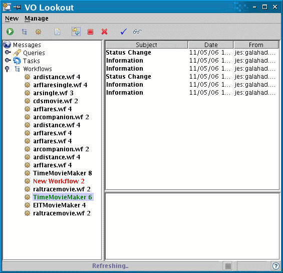

Solar Movie Maker Help
Summary
This Astrogrid science service allows a user to make a movie of solar images by means of a simple interface. It is available via the Workbench.
Datasets are:
- SOHO/EIT
- TRACE
Currently the movie maker takes as input an instrument name and a time interval for the movie.
How to run the Solar Movie Maker
Launch the AstroGrid Workbench and click on Parameterised Workflows. You will be asked for your Astrogrid login details, unless you are already logged in. Choose the Solar Movie Maker.
A new window will open: here you can specify the input parameters (double-click on boxes under Value to type in):
Input parameters
- Instrument name: either 'trace' or 'eit'
- Start date/time and end date/time (yyyy/mm/ddThh:mm:ss.000)
Click on the green circular icon to execute. This launches the workflow. You will be asked if you want to save the workflow document - saving the document into MySpace will allow you to load the workflow in the Workflow Builder to view it / modify it.
The Lookout window opens:

Under Workflows you will see an entry for your movie workflow. The entry will be green while the job is running and will become black when it has completed. At this point go to the MySpace Browser in the Workbench: in the directory called 'votable' you will find the output movie that you can download to your local machine. The name of the output movie will depend on your input parameters, e.g. for the ones in the screenshot above it will be: eit2002-07-28T01:00:00.000.mpg .
Usage Notes:
- TRACE data are archived in hourly files (also called 'tri' files). At present the movie maker produces TRACE movies of minimum duration 1 hour.
Main workflow steps
- Start and end time are written into a template query and the query is sent to the data centre.
- Output of the query is sent to the AstroGrid SolarMovieMaker tool which downloads the files to MySpace and runs a set of SolarSoft mapping software routines that take the images and combine them into an mpeg movie.
- Output mpeg is sent to user's myspace.
Author: Silvia Dalla, s.dalla@manchester.ac.uk
Last revised : 8 June 2006